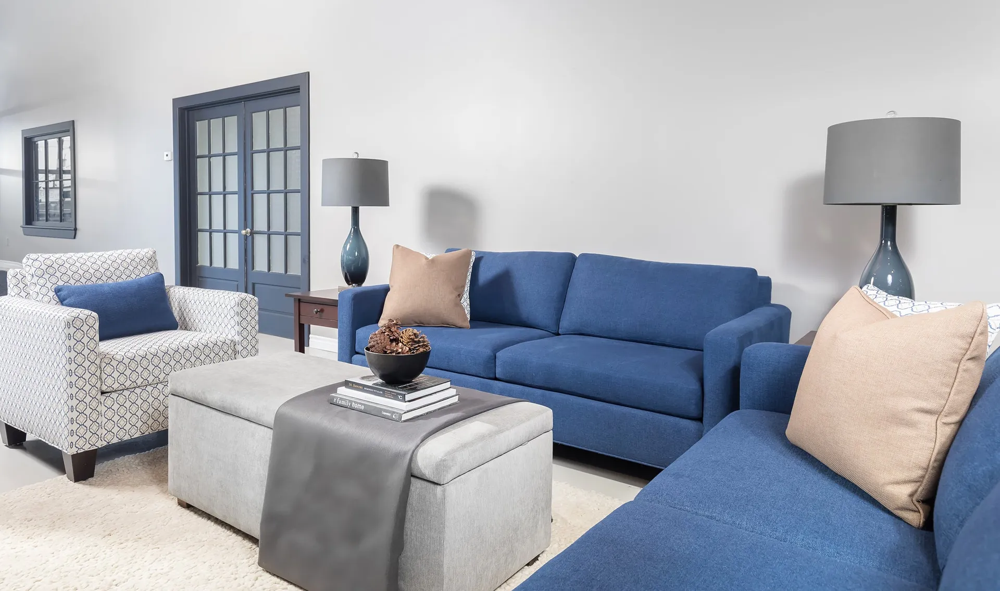
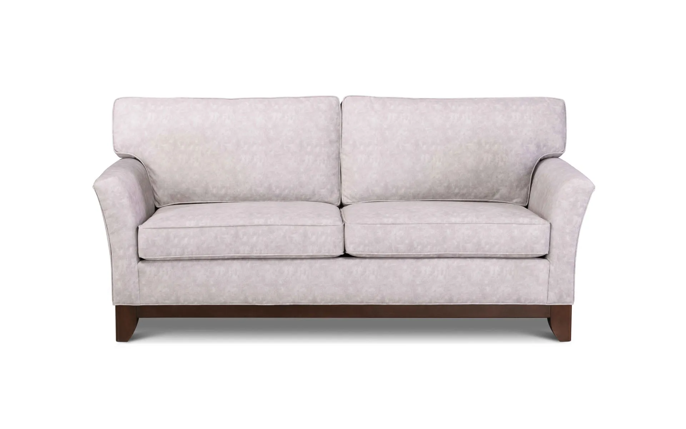
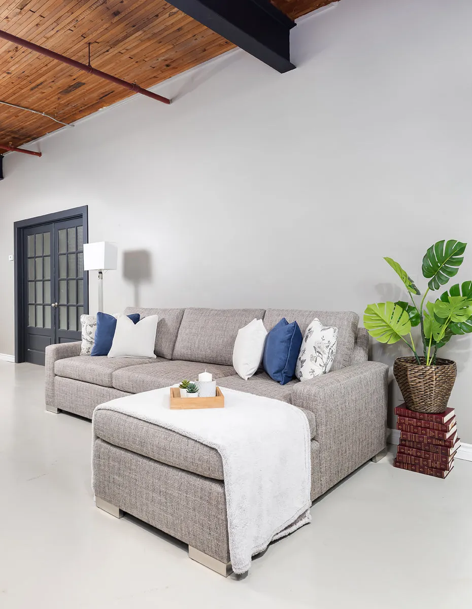
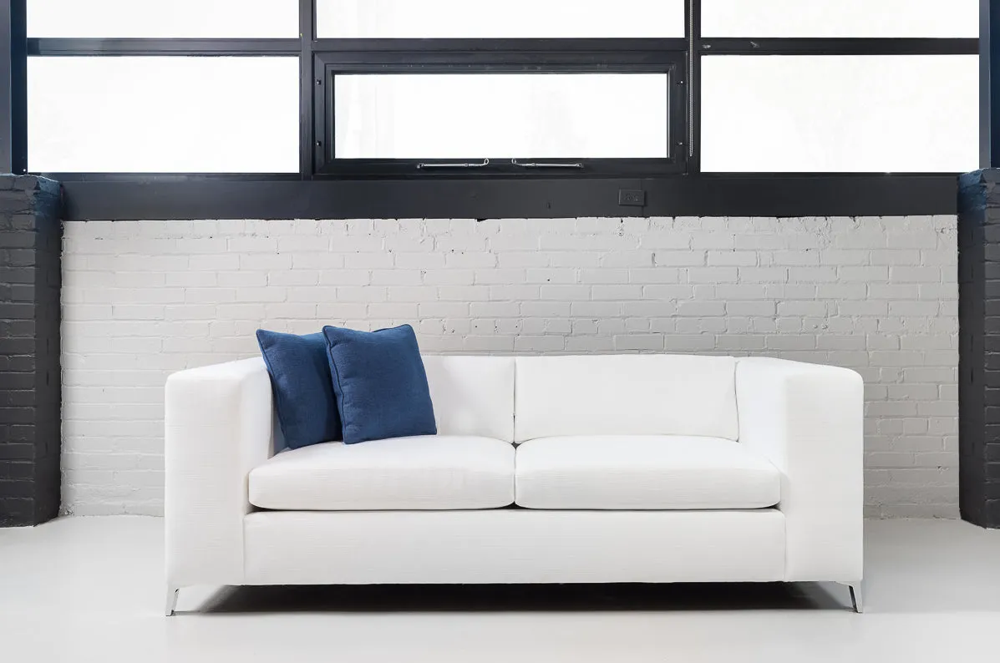

Est. 1998 · Markham, Ontario
Hardwood frames. Hand-tied springs. Built to order by the same family since 1998.
The new mark
The M from your logo, squared off like the stamp on the underside of a frame, in black with one warm leather tone. Same name, same year, same family. It simply reads bigger on a sign, a van and a phone.
On a phone
With your own photos


